Warmachine Mid-Year Balance Update: The Tabletop Battles Hot Take
Steamforged announced this mid-year balance update back in May at Lock and Load EU. In that presentation, the SFG team said that while this update isn’t going to be as sweeping as the balance changes made in the January update, this mid-year update will still make changes to units across all the factions to address both the overall game balance, as well as the internal balance of each faction. SFG is also overhauling the command card system with this update, after first teasing it at Adepticon earlier this spring.
Now that the day has come and the balance update is live on the app, our Warmachine team here at Tabletop Battles is here to summarize the changes, who are the big winners and losers from this update, and where we predict the meta will go from here!
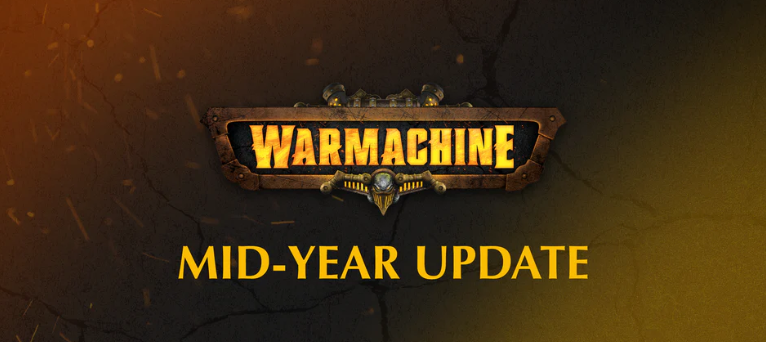
Credit: Steamforged GamesNew Command Cards and Defenses
So the big general change is to command cards and defenses, as they’ve basically been totally reworked.
The number of generic command cards has been reduced down to just five, and they work much differently now. Each card now has two abilities, taken from the old command cards, and when you use the card you can only select one of the two abilities. While this does basically toss the complexity of command card selection out of the window, it does introduce a very interesting opportunity cost into how you play your command cards. You have all the tools available for each game, but you won’t ever get to use all of them, and adapting to this new system and learning how to navigate selecting between the two abilities on each card is going to be an important skill for players to learn.
Defenses are also overhauled, and are no longer command cards. Instead, they are purchasable with points at list building. Barriers cost 2 points each, with the other three options costing 1 each. Defenses have an FA of 3, so you’re still limited to the same number of defenses as before, but making defenses a decision at list build adds a very interesting element of opportunity cost to the game, just like with command cards. You can still have your barriers, sure, but you're going to need to drop a solo or potentially a whole unit to squeeze three in there.
Defenses are in general more durable though, since the sapper card has been removed and players can no longer trivially remove them from the table. There are still a few ways, like extra large base movement and the reworked Powder Keg, but it's nice to see that Defenses will be harder to remove if players need to pay points for them now.
Faction Updates
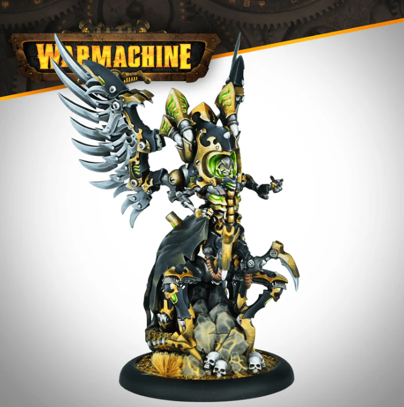
Credit: Steamforged GamesNecrofactorum
Kicking things off with one of the more fun changes, Cryx saw two main updates.- Mortenembra’s feat has been reworked to allow for the resurrected Warjack to be placed within 3” instead of completely within, and the returned Warjack can elect to give up either their combat or movement action instead of giving up both.
- Sepsira loses her Field Marshall to hand out Combo Strike to Mechanithralls, because now all Mechanithralls have it base.
Also, Mechanithralls being better plus the reveal of a new Mechanithrall attachment in the works is great for zombie enjoyers out there, and opens up some neat Mechanithrall synergies outside Sepsira.
Trish: I’m happy with the change to Mechanithralls; being able to put some serious damage output with them will be nice. I would like to see them more, they are among my favorite models. I still think they are going to be limited to casters with a MAT fixer, MAT 5 just limits them so much. The other mainline MAT 5 infantry in the game, Soulless, only see play with MAT fixers or as shield guards.
Mortenebra’s changes should be really interesting. If she casts Mobility and charges something she will fly up the table 11 inches. She can then place a jack within 3”, it will typically be a heavy with a 2” base, most likely a Malefactor with an Ax, for another 2”. The total threat will be 17” which will be very hard to defend against. - Heaven forbid you trigger Admonition on her on the same turn. The limiting factor will be getting focus on the jack, but with Synergy up, the jack may not need many resources. If need be, Necrosurgeon’s are able to empower 15” inches from their starting point as well so the list becomes deceptively fast.
Gravediggers
 Credit: Steamforged Games
Credit: Steamforged GamesTwo main changes here, with the changes to Caine being mirrored in Storm Legion.
- Caine loses access to Mage Sight, and instead picks up Arcane Sight, which lets him ignore stealth and cloud effects, but no one else.
- Cyn picked up a small suite of buffs, including Reload [1] on her main gun and an update to her Augmented Munitions ability, handing out +2 RAT alongside +2 ranged POW when a battlegroup model uses an Ammo Crate. Cyn also loses Arcane Precision.
Trish: I think this is a step in the right direction; but not quite enough to get grave diggers where they want to be. Caine needed adjusting - he had such a distorting impact on how you had to play that the entire battle was played around minimizing his feat. That said, mid year updates are supposed to cover the most egregious standouts and I think Caine fits that category.
Matt: I don’t think the changes to Caine are going to meaningfully change anything with Gravediggers’ play rates. They’re not a big enough nerf to really consider leaving him at home, and it’s not like you’re going to replace him with Cyn despite her buffs. I’d like to see something done with Jakes or Vargus in January to give them another playstyle to build around.
Storm Legion
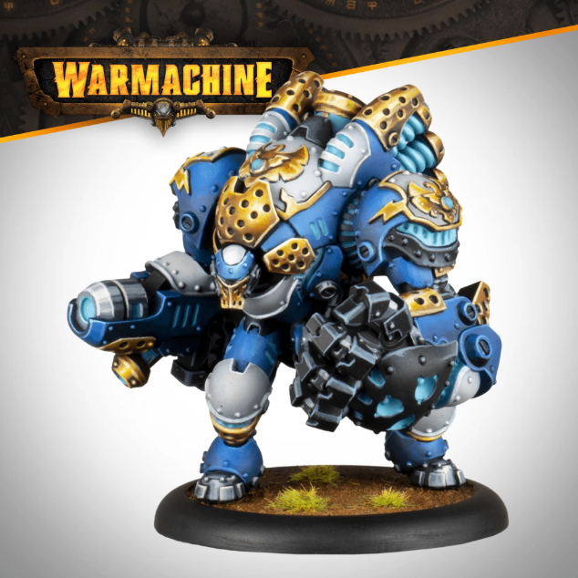
Credit: Steamforged GamesCaine gets the same change here that he received in Gravediggers, plus some buffs to Storm Legion’s Warjacks.
- The Stryker goes up to DEF 13, and picks up a point of POW on its Voltaic Halberd and Hammer.
- The Courser also jumps up a point of DEF and extra POW on its Spear and Broadsword, and its Heavy Stormthrower drops down by 1 point. Its Dodge head does pick up an extra point to make up for the increased defense.
Trish: The DEF buff on the jacks is certainly not what I was expecting, but it does create an interesting change. I suspect Calder will become very popular running Jacks. I have found playing Warmachine shifting DEF and ARM from Average to Good with buffs is not nearly as good as shifting from Good to Great. The example Calder's feat gives +2 DEF. A Stryker going from DEF 12 to 14 is nothing special, but going from 13 to 15 is much more significant. Almost everything in the game will need to boost to hit reliability. I like the change, but I’m not sure it was enough.
Matt: I have a feeling Stryker spam is going to be pretty great.
Dusk
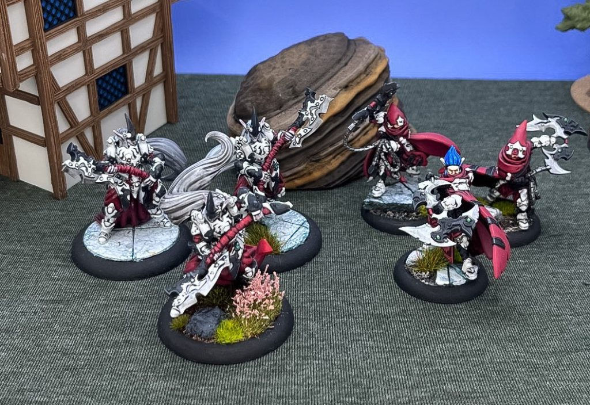
Credit: Trish RossOnly one thing was touched in Dusk, but there were pretty substantial changes made.
- Hellyth had a number of changes made to her profile. First, her Magelock Pistols were increased from RNG 10 to RNG 12 and lost fire group. In return, she picks up the spell Force Aura and her feat gives an armor bonus to all friendly faction models, rather than just warrior models.
Matt: I’m very happy to see Force Aura on Hellyth. Getting in close is a bit of an ask for a lot of good Dusk units, so giving her a tool to keep them alive really mitigates the loss of Fire Group.
Old Umbrey
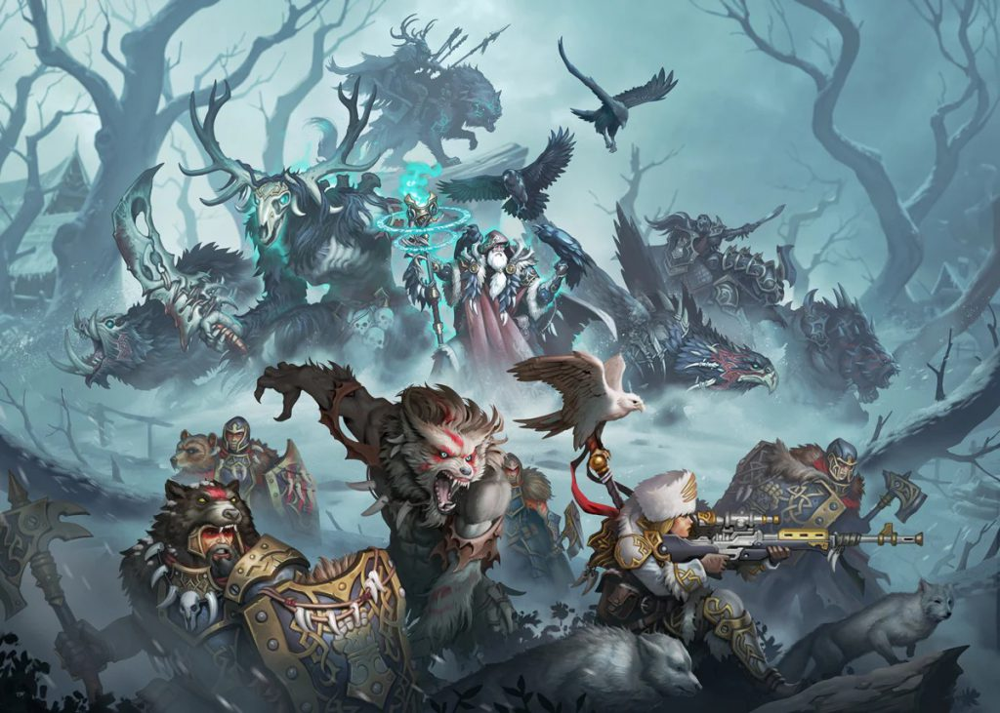
Credit: Steamforged GamesThe current meta menace saw changes to two of its most popular Warcasters in this update.
- Kovoskiy’s feat was nerfed, now providing cleave instead of an extra melee attack and it requires the affected models to be in control range their whole activation to gain the feat benefits.
- Lesnoi Loses Befuddle and Inviolable Resolve, but picks up two new similar spells to replace them. First is Sacreligious Ferver, which hands out an ARM bonus to Warrior model/units and gives Lesnoi a Fury every time they die, and second is Winged Nuisance, which allows for Lesnoi to place a non-leader model within range completely within 2” of its current location.
Lesnoi’s is weird, though. I understand the logic behind swapping IR for a different ARM buff that wasn’t immune to crowd control, but replacing Befuddle with Sacrilegious Fervor is a bizarre decision if the problem was Lesnoi's ability to move models. Sure, it's got less range and you don’t get to move it nearly as far, but Fervor more than makes up for that in the fact it's a place ability, and not an advance. That opens up a ton of utility for Lesnoi, and it likely doesn’t move the needle at all on his power level, it might honestly make him even better.
Even with Kovoskiy getting a substantial hit, Old Umbrey made it out of this update like bandits. Lesnoi’s changes really don’t do anything for his overall power level, and also none of the other offenders in the faction got touched. Powerhouse units like Primevals, Morozov, and Shifted walked away from this completely untouched, so most of the stuff that made this faction so dangerous before is still going to be the things making it dangerous. A heavier hand was needed here.
Trish: Hot Take: I think Lesnoi was actually buffed in the update. Bohdan took infantry to leverage Incite so IR not being able to be cast on beasts feels small. (I don’t think putting IR on a Gorger was the right call, but I may be wrong - and my meta hasn’t fully shifted around the Gorger) I think the bigger change is killing those infantry now recharges his Fury. On a feat turn he would typically cast Incite, upkeep IR, and MAYBE do a boosted befuddle. That would leave him on 1 fury, 2 if he lucky penny’ed. He will now be able to Grim Salvation to a nearby unit with Sacrilegious Fervor on it, and get even more fury. It makes it even harder to kill him. Before you could kill him by hitting him with spells or ★attacks to bypass Grim Salvation and he would only have 1 or 2 transfers. Now you have to do that, all while not killing the unit he has put Sacrilegious Fervor on. The second change, Befuddle to Winged Nuisance also feels like a buff. Befuddle could be limited by careful placement, such as putting a model directly in front of key pieces. Additionally, since it was an Advance it was reduced by terrain. A place bypasses all of those limitations. I may be wrong, and those changes are nerfs, but they feel trivial if they are.
As far as Kovoskiy (Yana) goes, I don't really see why she was addressed. She has a very high win % in OU, but I don’t think this fixes that. I believe it is the Primeval that is the real root of the problem, and nerfing Yana will only reduce her play rate without doing anything to OU’s leading position as a faction.
I think the other unwritten change to OU was a general nerf for gunlines. That was the single thing keeping OU in check and they have generally been nerfed around them. OU made out like bandits.
Winter Korp
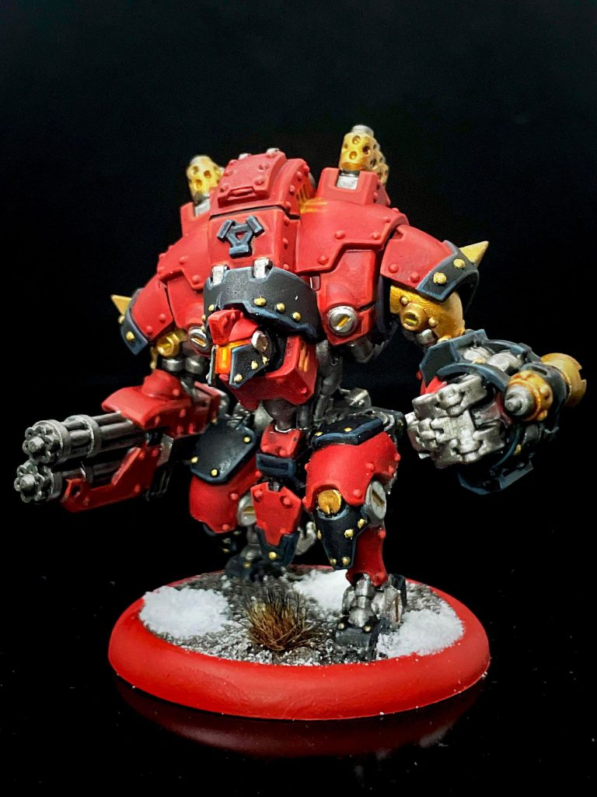
Credit: Dan "Swiftblade" RichardsonWinter Korp had the longest list of changes, to multiple casters as well as Lazarenko:
- Kovoskiy’s changes from Umbrey are also here, but she also picked the ability Imbued Wrath, which lets Warjacks in her battlegroup be allocated 4 focus instead of 3.
- Baranova’s ARC stat was reduced to 7
- Savaryn picked up Arcane Authority, which lets him upkeep spells on friendly faction warrior models for free.
- Vilkul’s Alchemical Mask was upgraded to now ignore all concealment, and her Thrown Axe gains both Reload [1] and Weapon Master.
- Lazarenko lost Reposition 3 and 2” of range on his ‘Jack Buster, and in return picked up Ambush and an extra 2 points of ARM.
I understand dropping Barnova’s ARC to 7. She is one of the strongest casters in the game - locked in a faction that is floundering. Winter Korp have a 45% win rate, the lowest of the contemporary factions. That said, I would have expected the change to happen in January with a larger update. She was not having any impact on the meta, so it feels premature.
The other changes feel insufficient. Lazarenko’s changes feel especially bizarre. If the mid year updates are to address the most egregious problems, he certainly was not on the list. His was, and still is a forgettable solo.
Savaryn getting Arcane Authority is nice, I guess. It will help him be less focus strapped. He will now get to upkeep Escort for free, and Iron Flesh for free. Rock Wall will be unaffected, and Fire for Effect is typically cast on a jack. He will finally be able to cast Tides of War, or may allocate focus.
Swiftblade: Yeah these changes hit Khador like a wet noodle but I’m still excited about the changes to Vilkul, but that's mostly because I’m a former Protectorate player who claps like a seal when they see the Weaponmaster icon. It’s not going to save Winter Korp, but the novelty of it rocks.
Shadowflame Shard
 Credit: Steamforged Games
Credit: Steamforged GamesLylyth was one of the first poster children of the balance update, so we see her changes here, and Incarnate Knights also see a change.
- Lylyth lost 2” of range on her Hush Full Draw profile, and no longer has the Warping Winds ability.
- Incarnates were reduced from ARM 19 to ARM 18.
Trish: I had been putting off learning Lylyth expecting her to have a significant change, but it looks like SFG took a really light touch to her. She still is going to be the defining caster of the faction. Hush Full Draw will still shut down a colossal for a turn. The reduction of the ARM for Incarnates makes sense, they were pushing the durability curve, especially on Kyrrax with Dauntless Resolve on them. The would be sitting at ARM 24 once battle driven was triggered; and while there are factions that are able to operate in that range, it was not in range with what was expected for Khymaera.
Sea Raiders
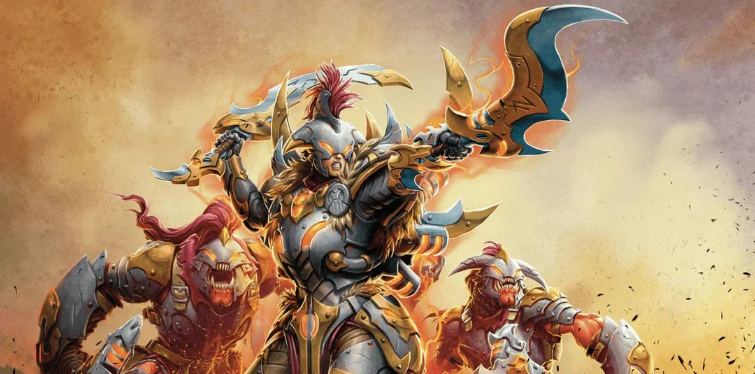
Credit: Steamforged GamesKishtaar and Sabbareth both were updated for the Sea Raiders.
- Kishtaar lost Fire Group, just like Hellyth in Dusk, but instead gained Banishing Ward for extra spell defense. Her ranged weapon was also increased from RNG 10 to RNG 12.
- Sabbareth lost Inviolable Resolve.
Trish: Kishtaar losing Fire Group makes sense from a faction identity perspective. Nobody looked at Orgoth and thought, “Yeah, I expect that faction to have heavy jacks with punishing machine guns.”
Matt: This is a personal attack against me. Seriously though, these seem fine and not a big issue. Taking away some ranged firepower and some defense makes sense as SFG continues to grapple with what Orgoth’s playstyle actually is besides just being an aggressive pile of stats.
Brinebloods
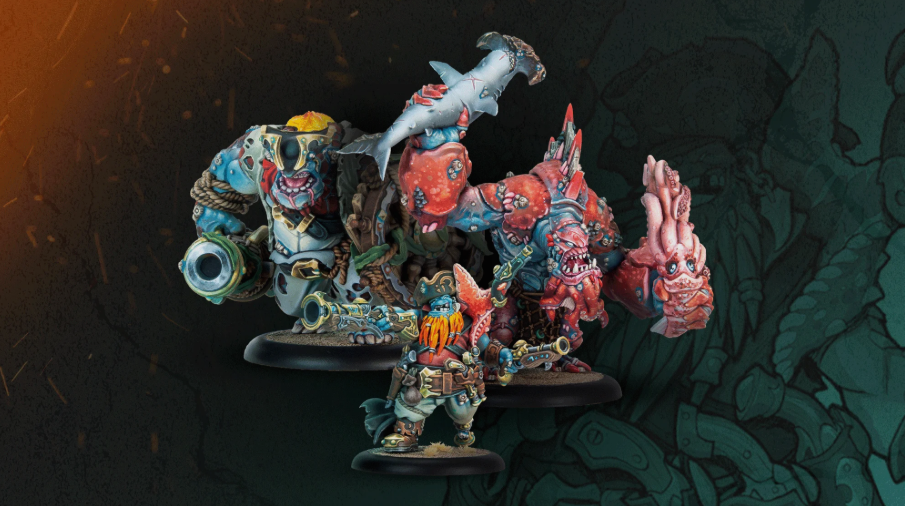
Credit: Steamforged GamesFirequill and the Lochabash Brother were Both Updated
- The Lochabash Brothers lost 1 DEF and 1 ARM
- Firequill lost Field Marshal [Black Penny] and gained Field Marshal [Runic Ammunition] - letting cohort models cast a free animus after killing a model. The True Sight aspect of his feat now only affects his battle group.
Matt: A friend of mine is learning to play through battlebox games right now, and she hates the Lochabash Brothers more than anything, so this is a welcome change for her. The Firequill changes seem pretty brutal, but I don’t know what other caster would step up to fill the gap there so I expect we’ll still be seeing relatively similar builds, they’ll just be less effective.
Kithguard
 Credit: Steamforged Games
Credit: Steamforged GamesTwo Changes came to Kithguard, neither directly changing a unit.
- Trapdoors have been updated so that they are destroyed when contacted by a gargantuan or a colossal. (Not battle engines)
- Jungle Trolls Machete Compost ★Action was affected by a change in how “place anywhere in base contact” works - as a result it is no longer possible to place the Jungle Troll behind the placed forest, blocking line of sight. (This discussion can be found in SFG’s Discord Server, in the Rules Section - it’s not part of the official document but part of a rather detailed rules dive)
The Jungle Troll Compost wall change is a welcome one. Cloud walls have always been punishing if you don’t have the tools to deal with them, and a tree wall was worse.
Convergence
 Credit: Privateer Press/Steamforged Games
Credit: Privateer Press/Steamforged GamesAxis was the only model updated.
- Axis feat lost the bonus to SPD and Melee Damage Rolls on friendly models, now only effecting enemy models. Razor wall now provides Cover.
Gyrmkin
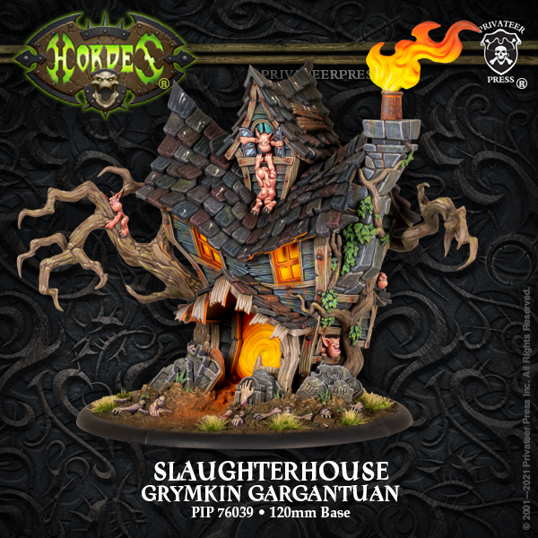
Credit: Privateer Press/Steamforged GamesThe spookiest, scariest faction in Warmachine was hit with two changes, and I think we all know what's coming here.
- The Old Witch lost Arcane Calibrations as one of her Arcane Machinery selections.
- The Slaughterhouse was dropped down to FURY 4 and the Porch Light can no longer ignore enemy models with its push.
Matt: Everyone knew the Slaughterhouse was going to get hit, and I think they did a good job with it. It’s still got a great role in the army and can do what it needs to do, but letting players screen out fragile units is going to make it feel much less oppressive.
Infernals
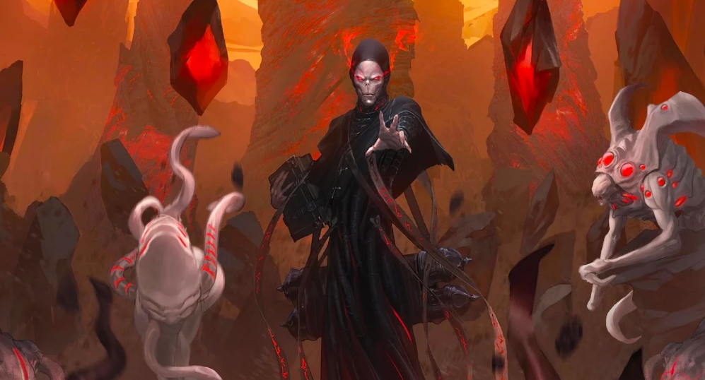
Credit: Privateer PressOne model was adjusted
- Agathon lost Field Marshal [Sacred Ward]
Trish: Field Marshal [Scared Ward] was nuts, and I’m glad to see it finally being addressed. Spell immunity was always a Menoth and Fellblade trait, so seeing it all over was frustrating. Infernals have enough tricks of their own, they don’t need to also shut down yours!
Winners and Losers
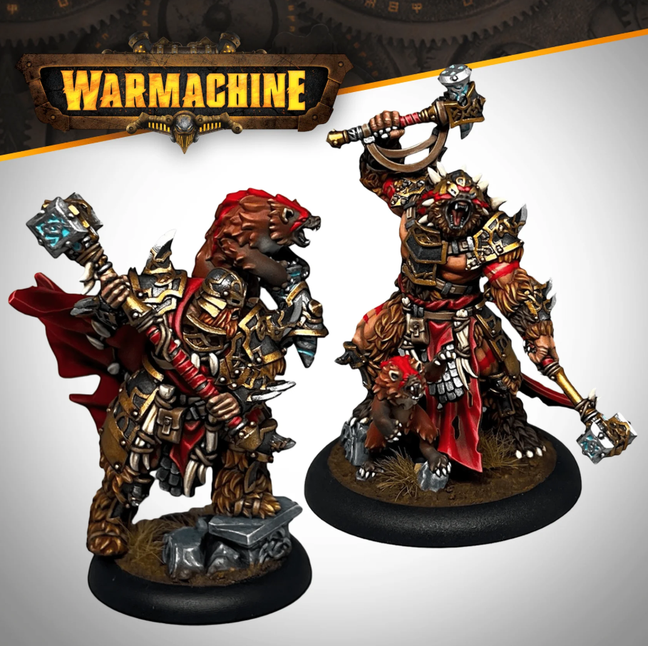
Credit: Steamforged GamesTrish: Winners: OU and Kithguard. Old Umbrey were barely touched while being way ahead of the curve. Certain models like the Primeval were untouched. I expect them to remain the dominant faction in the meta. Kithguard are still finding their place in the meta. I suspect they will land at the top; there have been several tournaments where Kithguard have been dominant even with only half their models. We will see if Kithguard are just the top faction, or the top new player stomping faction.
Losers: Gravediggers. They had significant nerfs to their strongest caster. Cyn got massive buffs but it’s to a caster nobody has a good understanding of. It feels like another round of whiplash for the faction. They still settled into an identity. One of these days I will see a player use a heavy airdrop to give a heavy weapon to Valiant.
Swiftblade: Umbrey’s the biggest winner here, which is wild. The nerfs that OU was hit with barely register with the factions gameplan, becoming even stronger as several nasty gunlines continue to get brought to heel. While the aim here in this update was to bring Umbrey’s power level down a bit, my impression instead is that Umbrey has gone from probably the best faction in the game, to the undisputed champion.
I’d also say Storm Legion and Necrofactorum are winners here. Morty might have some play now, and the Stryker looks like a great chassis to build around now. I don’t think we will see either of these factions shoot up to the top of the WR charts, but some new list diversity is always welcome.
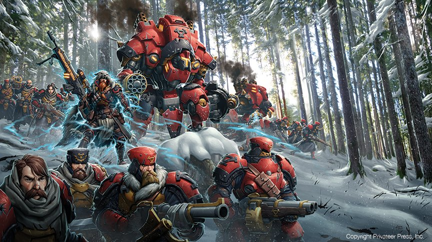
Credit: Steamforged GamesAs far as losers go, I hate to say it, but maybe Winter Korp? Again, that's wild to think, because this faction was mostly targeted by buffs with the update. But even with some good changes (I love the weaponmaster throwing axes), they aren’t strong enough to put the entire faction on their back and carry them to a better winrate. More than just a handful of casters needed help here, the whole roster probably needs a second look and I feel for any Winter Korp player who has to struggle through potentially 6 more months fighting uphill.
Final Thoughts
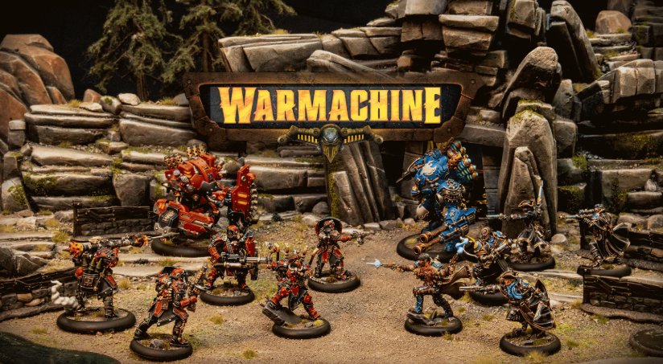
Credit: Steamforged GamesSwiftblade: There are a few bright spots in this balance update, but as a whole I’m pretty frustrated with it. I totally understand the logic from SFG about preferring to go small with the changes, and reserving the big sweeping update for January; you don’t want to make a big change, goof it up, and then make another change on that change. A gentle touch, followed by some observation and then follow up, is a very smart way to address game balance.
The problem is that SFG’s changes often feel too conservative, and the old problem children from the first half of the year are going to be problem children in the second half of the year too. Old Umbrey is still going to dominate, while Winter Korp is still going to struggle. I’d be much happier with this balance update if we saw a few more drastic nerfs to the most egregious offenders, alongside heftier buffs to underperformers. If you’re only going to do a small handful of balance updates a year, you need to make them big enough to make a noticeable difference for both those on top and those at the bottom. As it stands, I’m pretty skeptical that’s going to happen.
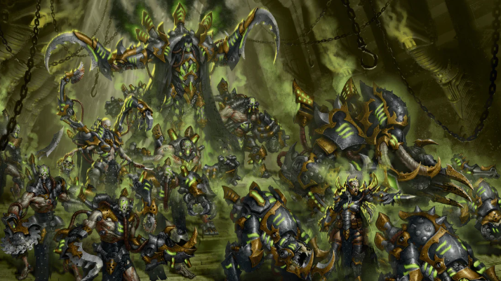
Credit: Steamforged GamesIt's not all doom and gloom though, and there’s plenty to be excited about here. I think they found a very nice balance spot for the Slaughterhouse, which is a welcome surprise, and I think both Storm Legion and Necrofactorum received some great changes that at least get the list building gears turning. And on some level, I always welcome a balance update that doesn’t send any factions straight to the dumpster, which is always the worst possible outcome. Plus, the command cards and defenses changes are really neat, and absolutely do provide an exciting shakeup to the whole game. In fact, they’re the best part of this update because they’re so impactful and bold, I want to see more like this!
While it's disappointing that this balance update will probably do very little to change the status of the metagame, I’m happy to see SFG are getting involved and trying to keep the metagame healthy with these mid-year balance updates. I just hope in the future, we swing for the fences instead of trying to bunt.
Trish: The message with mid year changes was they were going to address the things that were most egregious. I don't feel like that was what really happened here. It feels like a few were addresses, then a bunch of random stuff was thrown in. Like, why is Sergeant Lazarenko on the list?
I know SFG has the thought process of “no changes to new factions for 6 months”, but I think that philosophy is wrong. New factions are impossible to balance right out the gate. I would rather a new faction be adjusted more to get it where it needs to be instead of dominating for 6 months and a massive nerf hitting after everyone has bought into the faction. We are running into a world where there's a very significant power creep with every new faction: Gravediggers, Old Umbrey, and now Kithguard. Fane of Nyrro looks to be continuing that trend and I think that is unhealthy for the game. Avoiding the CID zoo is a wise move, but I would much rather new stuff be adjusted MORE rather than less.
Matt: Conservative is also how I’d characterize these changes. SFG clearly sees where the outliers are, but they’re taking a light touch on them, while also pre-emptively making changes in case those light touches turn out to be more impactful than they think. I don’t think that’s really going to happen, but we’ll see. Overall, I would prefer to see buffs to mediocre warcasters along with nerfs to the overplayed ones, but that might be out of scope for what SFG is characterizing as an emergency patch rather than something comprehensive like the January updates. I just worry that nerfing popular casters without really doing anything for the ones that aren’t played is only addressing half the problem.
Have any questions or feedback? Drop us a note in the comments below or email us at contact@tabletopbattles.com. Want articles like this linked in your inbox every Monday morning? Sign up for our newsletter. And don’t forget that you can support us on Patreon for backer rewards like early video content, Administratum access, an ad-free experience on our website and more.
Originally published on Goonhammer.


Leave a Comment